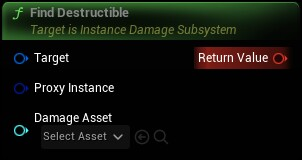

Tries to find a destructible for the given proxy instance
|
Target
Instance Damage Subsystem Object Reference
|
|
|
Proxy Instance
IDSProxy Instance Structure
|
|
|
Damage Asset
Soft Object Reference
|
is optional but if provided it will call GetDestructible instead of iterating the pool so it is recommended to set if the damage asset is known. The asset can also be sources from the proxy if it is valid. |
|
Return Value
IDSDestructible Instance Structure
|
found destructible instance or nullptr |